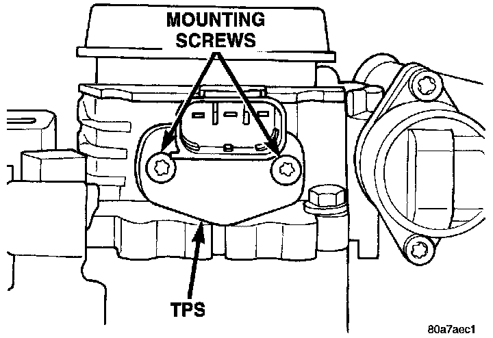
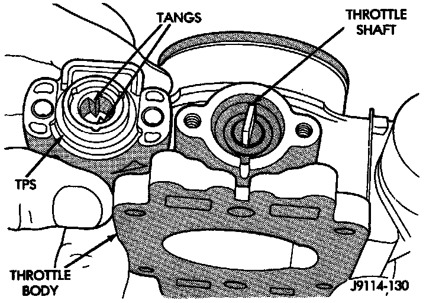

Throttle Position Sensor: Service and Repair
THROTTLE POSITION SENSOR (TPS)The Throttle Position Sensor (TPS) is mounted to the throttle body
REMOVAL
1. Disconnect TPS electrical connector.
Fig. 69 TPS Mounting Screws:

2. Remove TPS mounting screws (Fig. 69).
3. Remove TPS.
INSTALLATION
Fig. 70 TPS Installation:

The throttle shaft end of the throttle body slides into a socket in the TPS (Fig. 70). The TPS must be installed so that it can be rotated a few degrees. (If the sensor will not rotate, install the sensor with the throttle shaft on the other side of the socket tangs). The TPS will be under slight tension when rotated.
1. Install the TPS and retaining screws.
2. Tighten screws to 7 Nm (60 in. lbs.) torque.
3. Connect TPS electrical connector to TPS.
4. Manually operate the throttle (by hand) to check for any TPS binding before starting the engine.